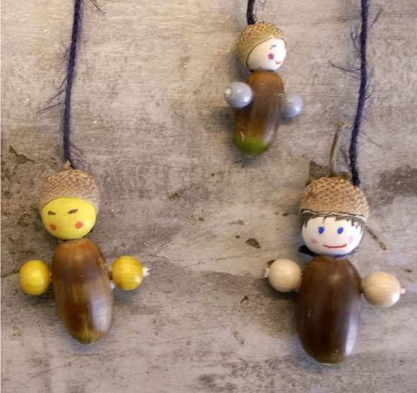
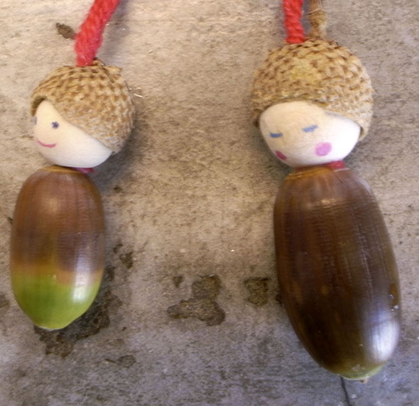

Start›Blog›Herbst›PersonenHerbstPersonen30. September 2010   Estas personitas pequeñas nacen en otoño... cuando las bellotas caen de los arboles. Little persons born in autumn... when the acorns fall from the trees.← Stoff 02Windmühlen →